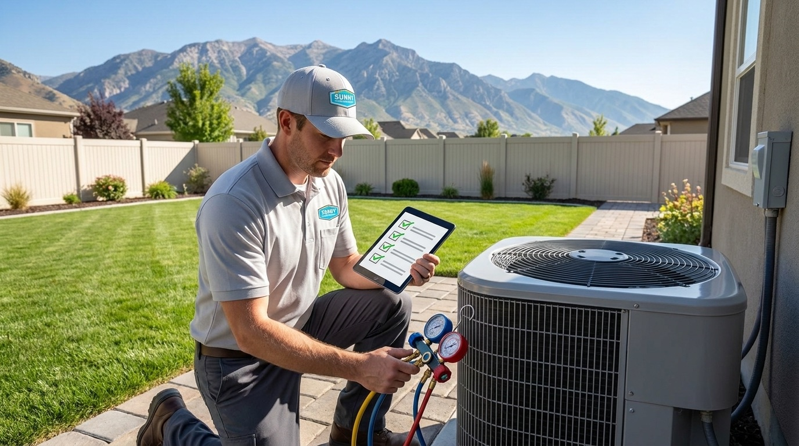
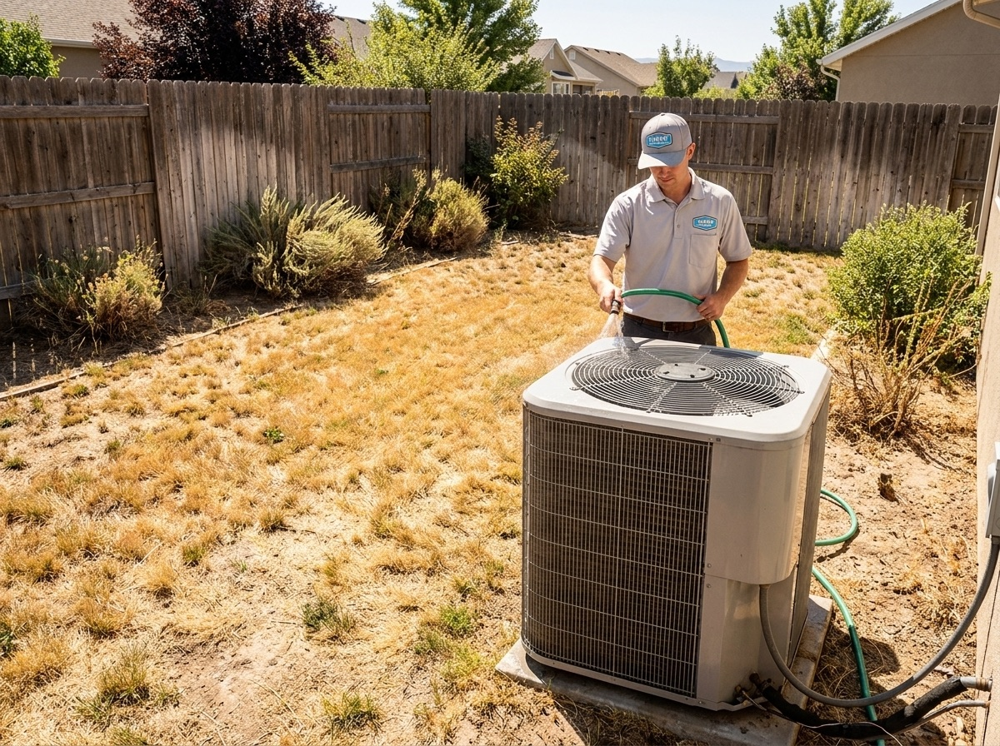

801.887.9650


A professional, annual AC tune-up in West Jordan is the most effective way to prevent breakdowns and keep cooling systems running efficiently through Utah’s extreme summer heat. Along the Wasatch Front, systems face long run times, dry air, and heavy dust exposure, conditions that quickly reduce performance without regular service.
For homeowners from Jordan Landing to newer developments near Mountain View Corridor, routine AC maintenance in West Jordan ensures consistent cooling, lower energy use, and fewer mid-season repairs. According to the U.S. Department of Energy, proper HVAC maintenance restores efficiency lost to dirt buildup, airflow restrictions, and system wear, often improving performance by 5 to 15%.

An air conditioner tune-up directly improves performance, efficiency, and system lifespan in Utah’s demanding climate. With summer temperatures regularly reaching the 90s and above, your AC system operates under sustained stress for months at a time.
Routine AC maintenance services provide measurable benefits:
Dust and debris are especially common across the Salt Lake Valley. Without regular AC yearly maintenance, buildup restricts airflow and forces your system to work harder than necessary.
The best time to schedule an air conditioner annual maintenance service in West Jordan is early spring, before temperatures spike and HVAC demand increases across the Wasatch Front. Booking early ensures your system is ready before the first major heatwave hits.
At Sunny Home Services, our technicians recommend booking maintenance between March and May, before West Jordan hits its first sustained 85-90°F stretch and systems start running daily. On the Wasatch Front, we typically see the first spike in no-cool calls by late May, and many of those systems haven’t been serviced since the previous season.
By scheduling local air conditioning maintenance early, our team can catch issues we commonly see in West Jordan homes, dust-clogged condenser coils, weak capacitors from high summer run-time, and airflow restrictions caused by fine valley dust, before they turn into mid-season breakdowns.
A professional AC tune-up in West Jordan from Sunny Home Services includes a full system inspection, cleaning, and performance check designed for Utah’s climate conditions. Each visit focuses on optimizing airflow, cooling output, and long-term reliability.
Our AC maintenance services typically include:
With 30+ years of combined experience, our technicians know exactly how West Jordan’s dust, elevation, and long summer heatwaves wear on AC systems, and how to stay ahead of it.

When choosing a West Jordan AC maintenance company, you need a team that understands how Wasatch Front homes, climate, and seasonal demand impact system performance. Sunny Home Services delivers fast, reliable service backed by local experience, without the delays of national chains or the inconsistency of smaller contractors.
With over 30 years of combined experience, our technicians know how West Jordan’s dust, elevation, and summer heat affect AC systems, and how to keep them running efficiently when demand is highest.
In West Jordan, where summer demand spikes quickly and systems often run continuously through July and August, fast response times are more than a convenience, they’re essential to maintaining safe indoor temperatures. Our team is equipped to handle these peak periods without extended delays, ensuring homeowners aren’t left waiting during critical no-cool situations.
We combine:
We also recognize that many Wasatch Front homes deal with fine dust infiltration and airflow restrictions that aren’t always visible. That’s why every visit includes documented system insights, with photos and clear explanations, so you understand exactly how your system is performing in local conditions.
Sunny Home Services delivers the speed and professionalism of a larger company with the accountability and care of a local team so you always know what to expect.
Unlike larger providers that rotate technicians, Sunny Home Services prioritizes consistency and communication. Homeowners know who is arriving, when they’ll arrive, and what work is being completed, an approach designed to eliminate uncertainty and build long-term trust throughout our West Jordan community.
Regular maintenance is the most reliable way to prevent breakdowns, improve efficiency, and extend the life of your system in West Jordan’s demanding climate. Sunny Home Services offers maintenance plans designed to keep your system running efficiently through every season.
Benefits include:

The offers from our door hanger, redeemable when you book. Mention them when you call.

If your system hasn’t been serviced recently, now is the time to schedule a professional AC tune-up. Preventative maintenance reduces breakdown risk, improves efficiency, and keeps your home comfortable through the hottest months of the year.
Sunny Home Services makes it easy to book fast, reliable AC maintenance in West Jordan with a local team that puts people first. Contact us today to schedule your service and experience the difference of a company built for Wasatch Front living.